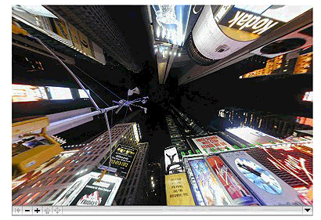

QuickTime VR Panoramas and Object Movies
This chapter introduces you to some of the key concepts that define QuickTime VR. You should read the chapter in order to understand these concepts and how they are used. The next chapter discusses the tools and techniques for creating QuickTime VR movies.
A high degree of user interactivity is provided in QuickTime VR movies, in that the user can control QTVR panoramas and QTVR object movies by dragging to and from various hot spots on the screen with the mouse. This process serves to enhance the user experience by simulating three-dimensional objects and places.
As discussed in the section “QuickTime VR,” QTVR panoramas create the experience of standing in a real place and looking around from side to side, up and down, and even 360 degrees behind the user—and having the view pan smoothly wherever you look. Panoramas are ideal for educational and archeological websites; hotel and real estate websites; and architectural walk-throughs.
By contrast, QTVR object movies allow users to “handle” an object—rotating it, tilting it, turning it over—so you can see it from every angle. Object movies are ideal for selling goods over the Web and for providing “hands on” access to museum pieces, sculpture, and medical and educational models.
The chapter is divided into the following major sections:
“QTVR Panoramas” describes a QTVR panorama, which lets you stand in a virtual place and look around, providing a full 360 degree panorama and in QuickTime, the ability to tilt up and down a full 180 degrees.
“QTVR Object Movies” describes a QTVR object movie, which is a series of still images that show an object from several different angles. The images are arranged so that when the viewer drags them using the mouse, the object seems to tilt and rotate
“Object and Panoramic Nodes” discusses scenes in a QuickTime VR movie, which are a collection of one or more nodes. A QTVR scene can include multiple linked panoramas and objects. A node is a position in a virtual world at which an object or panorama can be viewed.
QTVR Panoramas
A QTVR panorama lets you stand in a virtual place and look around. It provides a full 360 degree panorama and in QuickTime, the ability to tilt up and down a full 180 degrees, shown in Figure 2-1. The actual horizontal and vertical range, however, is determined by the panorama itself. To look left, right, up and down, you drag with the mouse across the panorama, as illustrated in Figure 2-2.
Figure 2-1 A cubic panorama movie in QuickTime with standard controls that let users tilt up and down 180.0 degrees
Panoramas also offer the viewer the ability to zoom in and out. The amount of zoom available depends on the panorama and is typically determined by the resolution of the image. There’s no sense letting the viewer zoom in until a single pixel fills the screen.
Nodes and Multinode Panoramas
A panorama consists of the view from a single place or a linked set of views from a number of places. Each viewpoint is defined as a node, and a series of linked viewpoints is a multinode panorama. The viewer can move from node to node by clicking hot spots.
A typical multinode panorama might feature the view of a building from the outside, linked to an interior view by clicking a hot spot on the building’s front door. Other interior views might be reached by clicking hot spots on interior doorways or staircases, allowing the viewer to “walk through” a building.
If you search the Web, you’ll find QTVR panoramas of Mayan temples, the Louvre museum, New York tenements, Greek islands, Hawaiian bed and breakfasts, real estate sites, and so on.
A QTVR panorama is, technically speaking, a series of photographs or computer renderings, stitched together and projected onto a cylinder or cube, or other geometrical object surrounding space, mathematically, which is then displayed through a window on a Macintosh or Windows computer.
You can take a series of pictures, turning in a circle to get the full view of some spectacular place, then lay the pictures out side by side in a photo album, as shown in Figure 2-3.
A QTVR panorama is similar conceptually, in that you digitize the pictures, use software tools to lay them out side by side, and instead of a photo album, you put them on a CD or the Web.
Because of the mathematical stitching and projection, it’s possible for QuickTime to pan smoothly through the images as the viewer drags left or right, rather than clicking from one image to the next, so the viewer sees one continuous image (a cylinder) rather than a series of views (a polygon), as shown in Figure 2-4.
QuickTime 5 introduced a QuickTime VR cubic playback engine, which allows you to work with enhanced VR panoramas that include a ceiling view and a floor view as well. This new type of QuickTime VR panorama is the cubic panorama. It is represented by six faces of a cube, thus enabling the viewer to see all the way up and all the way down. (Note that QuickTime VR cubic playback is backward compatible; simple cubic panoramas play in earlier versions of QuickTime, with some distortion.)
QTVR Object Movies
A QTVR object movie is a series of still images that show an object from several different angles. The object may be shown in full rotation, often tilted at several angles as well. The images are arranged so that when the viewer drags them using the mouse, the object seems to tilt and rotate (see Figure 2-5).
Unlike a QTVR panorama, an object movie jumps from one discrete image to the next, that is, there is no stitching, blending, or projection. The illusion of motion is created by the persistence of vision and by using images that vary only slightly from frame to frame, exactly like a motion picture. In fact, if you put an object on a turntable and film it as it makes one rotation, you can use the footage as either a normal QuickTime movie or a simple QTVR object movie (the viewer can rotate the object but not tilt it), as shown in the Figure 2-6.
Figure 2-6 A QuickTime movie with standard controller and a QuickTime VR object movie with a VR controller
The main difference in the two illustrations shown in Figure 2-6 is the user interface. Using the linear movie controller, the user can play the movie or pause it; with the object movie controller, the user can drag the image to rotate it. Dragging the indicator in the Time slider in the linear movie controller has much the same effect as dragging the object in the object movie; the difference is that the slider has a beginning and an end, whereas you can keep spinning the object indefinitely.
If you film a rotating object from several angles by tilting the camera a little for each rotation, you have images of the object from several tilt angles at each point in its rotation, as shown in Figure 2-7.
If you arrange the images in a grid, you not only see the image rotate by panning left or right through the pictures, you also see the object tilt at any point in its rotation by panning up and down. This is a multirow object movie, and it allows the viewer to tilt and rotate the viewed object.
You don’t have to provide full rotation of an object. For example, you can film, photograph, or render the object through as many or as few degrees of rotation as you like. Similarly, an object movie can have a single row, and no tilt control, or multiple rows, providing views from straight overhead to directly underneath.
A typical object movie uses an image for every 10 of rotation or tilt. To make the apparent motion smoother, you use more images separated by fewer degrees. To make the object movie smaller, you either use fewer images with more degrees between them, or show less than 360 of rotation and 180 of tilt. An object movie doesn’t have to be a rotational view of an object. You can use any array of images you prefer, as shown in Figure 2-8.
Notably, an object movie doesn’t have to be series of still images: each view of the object can be a video clip or an animation. You can mix and match, using animations for some views and still images for others (but each view has to have the same duration). You can set the object movie to autoplay the clip or animation whenever the user drags to a new view; you can also set the object movie to loop any clips or animations continuously. The images for an object movie can be digitized from photographs or video, or they can be rendered from a 3D-modeling program.
Object and Panoramic Nodes
The data for a QuickTime VR virtual world is stored in a QuickTime VR movie. A QuickTime VR movie contains a single scene, which is a collection of one or more nodes. A node is a position in a virtual world at which an object or panorama can be viewed. For a panoramic node, the position of the node is the point from which the panorama is viewed. QuickTime VR scenes can contain any number of nodes, which can be either object or panoramic nodes.
QuickTime uses the term movie to emphasize the time-based nature of QuickTime data (such as video and audio data streams). QuickTime VR uses the same term solely on analogy with QuickTime movies; in general, QuickTime VR data is not time-based.
An object node (or, more briefly, an object) provides a view of a single object or a closely grouped set of objects. You can think of an object node as providing a view of an object from the outside looking in.
Figure 2-9 shows one view of an object node. The user can use the mouse or keyboard to change the horizontal and vertical viewing angles to move around the object. The user can also zoom in or out to enlarge or reduce the size of the displayed object. Object nodes are often designed to give the illusion that the user is picking up and turning an object and viewing it from all angles.
A panoramic node (or, more briefly, a panorama) provides a panoramic view of a particular location, such as you would get by turning around on a rotating stool. You can think of a panoramic node as providing a view of a location from the inside looking out. Figure 2-10 shows one view of a panoramic node. As with object nodes, the user can use the mouse (or keyboard) to navigate in the panorama and to zoom in and out.
A node in a QuickTime VR movie is identified by a unique node ID, a long integer that is assigned to the node at the time a VR movie is created (and that is stored in the movie file).
When a QuickTime VR movie contains more than one node, the user can move from one node to another if the author of the QuickTime VR movie has provided a link (or connection) between the source and destination nodes. A link between nodes is depicted graphically by a link hot spot, a type of hot spot that, when clicked, moves the user from one node in a scene to another node.
It’s also possible to move from node to node programmatically, using the QuickTime VR Manager, even between nodes that were not explicitly linked by the movie’s author.
Object Nodes
The data used to represent an object is stored in a QuickTime VR movie’s video track as a sequence of individual frames, where each frame represents a single view of the object. An object view is completely determined by its node ID, field of view, view center, pan angle, tilt angle, view time, and view state. Figure 2-11 illustrates the pan and tilt angles of an object view.
In QuickTime VR, angles can be specified in either radians or degrees. (The default angular unit is degrees.) A view’s pan angle typically ranges from 0 degrees to 360 degrees (that is, from 0 to 2 radians). When a user is looking directly at the equator of a multirow object, the tilt angle is 0. Increasing the tilt angle rotates the object down, while decreasing the tilt angle rotates the object up. Setting the tilt angle to 90 degrees results in a view that is looking straight down at the top of the object; setting the tilt angle to –90 degrees results in a view that is looking straight up at the bottom of the object.
In general, the normal range for tilt angles is from –90 degrees to +90 degrees. You can, however, set the tilt angle to a value greater than 90 degrees if the movie contains upside-down views of the object.
The views that constitute an object node are stored sequentially, as a series of frames in the movie’s video track. The authoring tools documentation currently recommends that the first frame be captured with a pan angle of 180 degrees and a tilt angle of 90 degrees. Subsequent frames at that tilt angle should be captured with a +10-degree increment in the pan angle. This scheme gives 36 frames at the starting tilt angle. Then the tilt angle is reduced 10 degrees and the panning process is repeated, resulting in another 36 frames. The tilt angle is gradually reduced until 36 frames are captured at tilt angle –90 degrees. In all, this process results in 684 (that is, 19 ¥ 36) separate frames.
Important: The number of frames captured, the starting and ending pan and tilt angles, and the increments between frames are completely under the control of the author of a QuickTime VR movie.
The individual frames of the object can be interpreted as a two-dimensional objectimage array (or view array), shown in Figure 2-12. For a simple object (that is, an object with no frame animation or alternate view states), the upper-left frame is the first captured image. A row of images contains the images captured at a particular tilt angle; a column of images contains the images captured at a particular pan angle. Accordingly, turning an object one step to the left is the same as moving one cell to the right in the image array, and turning an object one step down is the same as moving one cell down in the image array. As you’ll see later, you can programmatically set the current view of an object either to a specific pan and tilt angle or to a view specified by its row and column in the object image array.
In the movie file, the image array is stored as a one-dimensional sequence of frames in the movie’s video track, as illustrated in Figure 2-13.

QuickTime VR object nodes were originally designed as a means of showing a 3D object from different pan and tilt angles. However, there is no restriction on the content of the frames stored in an object image array. In other words, the individual frames do not have to be views of the same object from different pan and tilt angles. Some clever movie authors have used this fact to develop intriguing object nodes that are not simply movies of rotating objects. In these cases, the use of pan and tilt angles to specify a view is less meaningful than the use of row and column numbers. Nonetheless, you can always use either pan and tilt angles or row and column numbers to select a view.
Each view of an object occupies the same amount of time in the object node’s video track. This amount of time (the view duration) is arbitrary, but it is stored in the movie file. When a view is associated with only one frame, the QuickTime VR movie controller displays that frame by changing the current time of the movie to the start time of that view.
It’s possible, however, to have more than one frame in a particular object view. Moreover, the number of frames per view can be different from view to view. The only restriction imposed by QuickTime VR is that the view duration be constant throughout all views in a single object node.
Having multiple frames per view is useful in several cases. First, you might want to display one frame if the mouse button is up but a different frame if the mouse button is down. To support this, QuickTime VR allows the VR movie author to include more than one view state in an object movie. A view state is an alternate set of images that are displayed, depending on the state of the mouse button.
Alternate view states are stored as separate object image arrays that immediately follow the preceding view state in the object image track. Each state does not need to contain the same number of frames. However, the total movie time of each view state in an object node must be the same.
Another reason to have multiple frames in a particular object view is to display a frame animation when that view is the current view. When frame animation is enabled, the QuickTime VR movie controller plays all frames, in sequence, in the current view. You could use frame animation, for instance, to display a flickering flame on a candle. The rate at which the frames are displayed depends on the view duration and the frame rate of the movie (which is stored in the movie file but can be changed programmatically). If the current play rate is nonzero, then the movie controller plays all frames in the view duration. If the current view has multiple states, then the movie controller plays all frames in the current state (which can be set programmatically).
The frames in a frame animation are stored sequentially in each animated view of the object. Each view does not need to contain the same number of frames (so that a view that is not animated can contain only one frame). However, the view duration of each view in an object node must be the same. In some cases, it is best to duplicate the scene frame to get the same view durations and let the compressor remove the extra data. See “Chapter 7, QTVR Atom Containers,” for complete information on how object nodes are stored in QuickTime VR movies.
An object movie can be set to play, in order, all the views in the current row of the object image array. This is view animation. For both view and frame animation, an object node has a set of animation settings that specify characteristics of the movie while it is playing. For example, if a movie’s animate view frames flag is set and there are different frames in the current view duration, the movie controller plays an animation at the current view of the object. That is, the movie controller displays all frames in the appropriate portion of the view duration and, if the kQTVRWrapPan control setting is on, it starts over when it reaches the segment boundary. If the animate view frames flag is not set, the movie controller stops displaying frames when it reaches the segment boundary.
Panorama Nodes
The data used to represent a panorama is stored as a single panoramic image that contains the entire panorama. The movie author creates this image by stitching together individual overlapping digitized photographs of the scene (or by using a 3D renderer to generate an artificial scene). Currently, these images are either cylindrical or cubic projections of the panorama. Viewed by itself, the panoramic image appears distorted, but it is automatically corrected at runtime when it is displayed by the QuickTime VR movie controller. Figure 2-14 shows a cylindrical panoramic image.
A panorama view is completely described by its node ID, field of view, pan angle, and tilt angle. As with object nodes, a panoramic node’s pan angle can range from 0 degrees to 360 degrees. Increasing the pan angle has the effect of turning one’s view to the left. When the user is looking directly into the horizon, the tilt angle is 0. Increasing the tilt angle tilts one’s view up, while decreasing the tilt angle tilts one’s view down.
For a panorama, the pan and tilt angle correspond to a specific point in the panoramic image. When these angles are set, the corresponding point in the panoramic image is displayed in the center of the current viewing rectangle. A cautionary note: this may not work or behave correctly in all cases.
Important: The classical image-warping technology for panoramic nodes, using cylindrical projection, does not allow looking straight up or straight down. But as discussed, with QuickTime 5, QuickTime VR supports looking straight up and straight down with cubic panoramas.
While a panorama is being displayed, it can be either at rest (static) or in motion. A panorama is in motion when being panned, tilted, or zoomed. A panorama is also in motion when a transition (that is, a movement between two items in a movie, such as from one view in a node to another view in the same node, or from one node to another) is occurring. At all other times, the panorama is static. You can change the imaging properties of a panorama to control the quality and speed of display during rest or motion states. By default, QuickTime VR sacrifices quality for speed during motion but displays at highest quality when at rest (at about a 3:1 performance penalty).
When a transition is occurring, you can specify that a special visual effect, called a transition effect, be displayed. The only transitional effect currently supported is a swing transition between two views in the same node. When the swing transition is enabled and a new pan angle, tilt angle, or field of view is set, the movie controller performs a smooth swing to the new view (rather than a simple jump to the new view). In the future, other transitional effects may be supported.
QuickDraw VR is capable of using tweening control data that affects the pan angle, tilt angle, and field of view. For information about tweening, refer to the QuickTime 4 Reference available at
http://developer.apple.com/documentation/QuickTime/QuickTime.html
Hot Spots
Both panoramic nodes and object nodes support arbitrarily shaped hot spots, regions in the movie image that permit user interaction. When the cursor is moved over a hot spot (and perhaps when the mouse button is also clicked), QuickTime VR changes the cursor as appropriate and performs certain actions. Which actions are performed depends on the type of the hot spot. For instance, clicking a link hot spot moves the user from one node in a scene to another.
Hot spots can be either enabled or disabled. When a hot spot is enabled, QuickTime VR changes the cursor as it moves in and out of hot spots and responds to mouse button clicks and other user actions. Your application can install callback procedures to respond to mouse actions. When a hot spot is disabled, however, it effectively doesn’t exist as far as the user is concerned: QuickTime VR neither changes the cursor nor executes your callback procedures.
The QuickTime VR Manager provides a number of functions that you can use to manage hot spots. The QuickTime API Reference includes the complete listing of these functions and is available at
http://developer.apple.com/documentation/QuickTime/QuickTime.html
Viewing Limits and Constraints
The data in a panoramic image and in an object image array imposes a set of viewing restrictions on the associated node. For example, a particular panoramic node might be a partial panorama (a panorama that is less than 360 degrees). Similarly, the object image array for a particular object node might include views for tilt angles only in a restricted range, say, +45 degrees to –45 degrees (instead of the more usual +90 degrees to –90 degrees). The allowable ranges of pan angles, tilt angles, and fields of view are the viewing limits for the node. Viewing limits are determined at the time a node is authored and are imposed by the data stored in the movie file.
The view limits for cubic panoramas act, in all but two cases, like those for cylindrical panoramas: namely, the limit is enforced at the edge of the view. The two exceptions are for tilt = + or -90 degrees; in these cases, the center of the view is constrained to straight up or down. Note that cubic panoramas allow you to go beyond + or -90 degrees, allowing you to look upside-down; beware, though, that pan controller acts in a somewhat unintuitive way when upside-down.
It’s possible to impose additional viewing restrictions at runtime. For instance, a game developer might want to limit the amount of a panorama visible to the user until the user achieves some goal (such as touching all the visible hot spots in the node). These additional restrictions are the viewing constraints for the node. As you might expect, a viewing constraint must always lie in the range established by the node’s viewing limits. By default (that is, if the movie file doesn’t contain any viewing constraint atoms, and no constraints have been imposed at runtime), a node’s viewing constraints coincide with its viewing limits.
Each node also has a set of control settings, which determine the behavior of the QuickTime VR movie controller when the user reaches a viewing constraint. For example, the kQTVRWrapPan control setting determines whether the user can wrap around from the current pan constraint maximum value to the pan constraint minimum value (or vice versa) using the mouse or arrow keys. When this setting is enabled, panning past the maximum or minimum pan constraint is allowed. When this setting is disabled, the user cannot pan across the current viewing constraints; when the user reaches a viewing constraint, further panning in that direction is disabled.
© 2002, 2005 Apple Computer, Inc. All Rights Reserved. (Last updated: 2005-06-04)